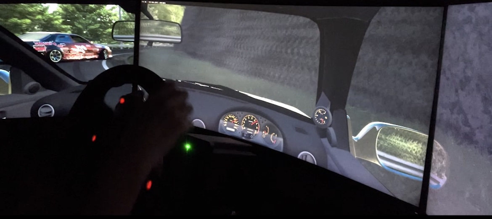

【Assetto Corsa】実車好きが辿り着いたシム環境！Simagic Alpha Mini + 3画面 & VR機材レビュー
公開日: 2026年6月7日 | カテゴリ: 機材レビュー / レースシム
Assetto CorsaやiRacingにハマっていくと、誰もがぶつかる壁が「デバイスのアップグレード」です。特にステアリングコントローラーとモニター環境は、タイムだけでなくドライビングの「気持ちよさ」に直結します。
今回は、私が現在納得して使っているレースシム機材の構成と、そのリアルな使用感についてレビューします。

実車さながらのインフォメーション「Simagic Alpha Mini」
ステアリングの要となるホイールベースには、ダイレクトドライブ（DD）のSimagic Alpha Miniを採用しています。
最大トルク10Nmを発生させるこのDDの凄さは、単に「重い」ことではありません。縁石に乗った時のわずかな振動や、タイヤのグリップが抜ける瞬間のステアリングの軽さが、解像度高く手に伝わってくる点です。実車のサスペンション交換やアライメント調整を行っていた時の「路面を掴む感覚」に非常に近く、シム上の車の挙動を予測しやすくなりました。
操作の要「Fanatec ClubSport V3」と「Amazonの激安6速シフター」
ロードセルがもたらす圧倒的なブレーキコントロール
ペダルはFanatec ClubSport V3を使用しています。ロードセルブレーキを採用しているため、「踏み込む距離」ではなく「踏み込む圧力」でブレーキをコントロールできます。これにより、コーナー進入時のトレイルブレーキングの精度が格段に上がり、ロック寸前でとどめる操作が劇的に安定しました。
あえての「Amazon激安シフター」という選択
Hパターンでのシフトチェンジを楽しむため、シフターはあえてAmazonで買える数千円の激安6速シフターを使っています。カチッとしたハイエンド機材ほどの重厚感はありませんが、スコスコと入るフィーリングは意外にも悪くなく、「旧車の軽いシフトフィール」と思えば十分に楽しめます。コスパを考えれば非常に優秀なパーツです。
没入感を使い分ける「32インチ3画面」と「Oculus Rift S」
視界の環境は、プレイスタイルに合わせて2つの環境を使い分けています。
空間把握の32インチトリプルモニター
普段のメイン環境は、32インチモニターを3枚並べたトリプルモニター環境です。サイドウィンドウ越しの視界が確保できるため、iRacingでの接近戦や、ドリフト時の進行方向の確認が圧倒的に有利になります。
完全なる没入感「Oculus Rift S」
さらに深い没入感が欲しい時や、ふらっと首都高（Shutoko Revival Project）を流したい時は、PCVRのOculus Rift Sを被ります。自分のPC環境はRyzen 7 5700X と RTX 3060 Tiの構成ですが、Assetto Corsa側のCSP（Custom Shaders Patch）設定や影の描画設定を適切にチューニングすることで、トリプルモニター時もVR時も、必要十分なフレームレートを維持して快適にプレイできています。
まとめ
ダイレクトドライブとロードセルペダルの組み合わせは、シムを「ゲーム」から「シミュレーター」へと引き上げてくれます。決して安い買い物ではありませんが、実車のパーツ代や維持費を考えれば、自宅で安全に極限のドライブができるこの環境は、むしろコスパが良いとすら感じています。
購入優先順位（予算別）
| 順位 | パーツ | 理由 |
|---|---|---|
| 1 | ペダル（ロードセル） | ブレーキ精度がタイムに直結 |
| 2 | DDホイールベース | 路面情報・FFBの解像度 |
| 3 | モニター or VR | 没入感。予算でどちらか |
| 4 | シフター | Hパターン派なら激安でも可 |
| 5 | シート・リグ | 長時間プレイの疲労軽減 |
キャリブレーションのコツ
- Simagic： SimHubまたは公式ソフトでmax torqueを10Nm→ゲーム内8Nm程度に制限
- Fanatec V3： ロードセルは100kg前後。ゲーム内Brake Gamma 2.0〜2.4
- ペダル位置： 膝が軽く曲がる角度。長時間の疲労を防ぐ
- VR IPD： Rift Sのレンズ間隔を実測値に合わせる（VR酔い記事参照）
VR vs トリプル：使い分け基準
| 用途 | おすすめ | 理由 |
|---|---|---|
| オンラインレース | トリプル | ミラー・周辺視野で状況把握 |
| 首都高・ドリフト | VR | 距離感・没入感が段違い |
| 長時間練習 | トリプル | VRは30〜60分で疲れる |
| 初めてのコース | VR | APEXの距離感を体で覚える |
| 配信・録画 | トリプル | 視聴者にも見やすい |
RTX 3060 Ti環境では両方90fps/75fps付近を維持可能です。詳細設定はMod・CSP設定ガイドを参照してください。
予算別の組み合わせ例
| 予算感 | 構成 |
|---|---|
| 〜10万円 | G29/G923 + 単画面。まずはロードセルペダル体験 |
| 〜25万円 | Alpha Mini + V3 + 27インチ×1 |
| 〜50万円 | 現構成（DD + V3 + 32インチ×3 + Rift S） |
この「RTX 3060 Ti」環境でトリプルモニターとVRを快適に動かすための、Assetto Corsaの具体的なグラフィック設定（CSP設定）は、Content Manager / CSP 設定ガイドで解説しています。
リグ・設置の実用Tips
DDは振動が強いため、デスク固定式スタンドではなく、床固定または独立リグが望ましいです。Simagic Alpha Miniは比較的コンパクトですが、10Nmの反力はデスクごと揺らします。ペダルは滑止めマット＋壁際配置で後退を防止。VRヘッドセットは専用フックで手の届く位置に——走行中に被り直すのは危険です。
Amazon激安シフターは、ネジ緩みでガタつくことがあるため、月1の点検を推奨。それでも「旧車の軽いシフト」と割り切れば、十分にドライブの楽しさを増してくれます。
まとめ
Simagic Alpha Mini + Fanatec V3 + 32インチ3画面 + Rift S——この構成は、Assetto Corsa/iRacingを「本気で」楽しむための現実的な落とし所です。予算が限られればロードセルペダルから。VR酔いは7日で克服可能。Mod設定で3060 Tiでも90Hz維持。機材は段階的に揃え、用途（オンライン/ドリフト/没入）でVRとトリプルを使い分ける。それがYamaStudio流のシム環境です。
デスク・マウント設置の実践Tips
DD 10Nmは「置くだけ」では使い物になりません。Simagic Alpha Miniでも、デスククランプ式だと本気のコーナリングでデスクごと揺れます。
- ホイールベース： 床固定の独立スタンドか、厚板補強したリグ。デスク天板15mm以下なら補強必須
- ペダル： 壁際＋滑止めマット＋突き出し防止ブラケット。ロードセルは踏むほど後退する
- モニター： 32インチ×3は奥行80cm以上確保。距離70〜80cm、目の高さは画面上1/3
- 配線： USB3ハブは避け、ホイール・ペダル・ヘッドセットはマザーボード直結
- VR： ヘッドセットは手の届く位置のフック。走行中に被り直すのは危険
リグなしで始めるなら、最低限「ペダルだけ壁際固定＋ホイールは補強板付きクランプ」が、10Nm環境のスタートラインです。Amazon激安シフターは振動で緩むので、月1のネジ点検を習慣にしてください。
騒音・マンション環境での配慮
DD＋ロードセルは、ゲーム内の音より「物理的な振動と叩き音」が問題になります。特にマンション・賃貸では近隠れないケースが多いです。
| 対策 | 効果 | コスト感 |
|---|---|---|
| Simagic max torque制限（8Nm以下） | デスク振動を大幅軽減 | 無料（ソフト設定） |
| 防振マット（洗濯機用等）をペダル下に | 低周波の床伝播を抑制 | 数千円 |
| プレイ時間帯の調整 | 深夜はロードセル踏み込み音が響く | 無料 |
| ヘッドホン使用 | スピーカー音量を下げられる | 既存機材 |
| 独立リグ＋防振パッド | 最も効くが設置スペース要 | 数万円〜 |
私は「22時以降はVRまたはトリプル＋低トルク設定」に切り替えています。ロードセルの100kg設定は昼間のみ。近所への配慮は、長くシムを続けるための保険です。騒音が心配なら、最初からAlpha Miniよりトルクの小さいDD（5Nm級）やベルトドライブ＋ロードセルペダルの組み合わせも、十分に楽しめる選択肢です。